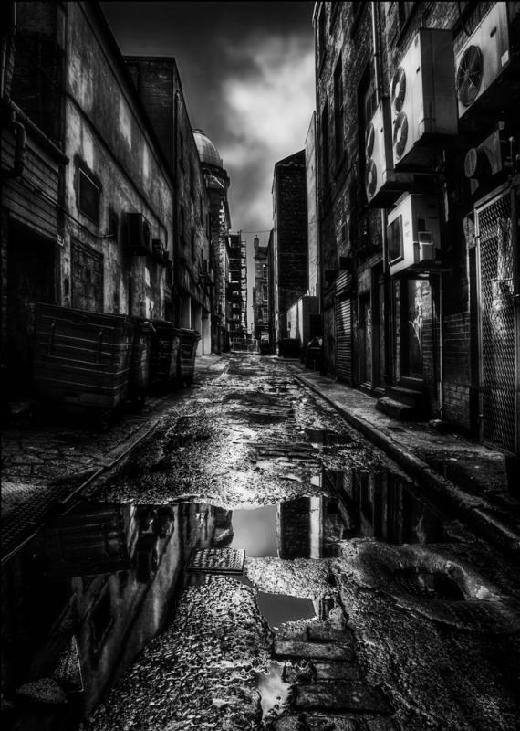

Nos sonhos da cidade Introdução
por Paulo Diovani GonçalvesIntrodução
Sua cidade está morrendo…
Um mal se espalha por seu corpo — uma doença — entupindo suas veias, corroendo seus órgãos e mitigando a vida de cada organismo que nela habita. A cidade sofre e os homens não percebem isso ou, se percebem, nada fazem, como se ignorassem que são apenas hospedeiros dela, apenas vermes e bactérias que vivem em simbiose com a mesma.
Em seu mundo desperto, as consequências são palpáveis — Problemas de trânsito, assaltos, assassinatos, fome, desemprego, abandono — mas são nos sonhos que tais consequências são mais devastadoras…

…Sonhos que se tornaram pesadelos
A cidade sonha, como qualquer ser vivo — e sim, a cidade está viva.
Há cidades que sonham com mais frequência e há aquelas que o fazem apenas raramente, mas todas sonham, e nesses sonhos elas se modificam. Suas maiores construções se tornam palácios, reinos ou até mundos inteiros. Suas estátuas e imagens são deuses e seus bosques são infestados de elfos e fadas.
Pelo menos, assim eram as coisas antes da doença…
Agora animais selvagens se tornam monstros horrendos, deuses caídos comandam legiões de seguidores em guerras sangrentas, e a própria doença se manifesta na forma de demônios, devorando os vivos e corroendo cada estrutura que toca. O sonho da cidade se tornou um grande pesadelo sombrio, com perigos mortais espreitando em cada canto.
créditos da imagem: Dark City Streets, by Paul Cook Photography
 Nos sonhos da cidade por Paulo Diovani Gonçalves está licenciado sob uma licença Creative Commons Atribuição – Compartilhamento pela mesma Licença (by-sa) 4.0 Internacional.
Nos sonhos da cidade por Paulo Diovani Gonçalves está licenciado sob uma licença Creative Commons Atribuição – Compartilhamento pela mesma Licença (by-sa) 4.0 Internacional.